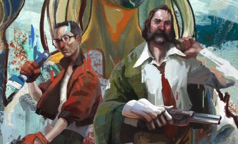

Vitor Luis
@VitorPassos · Dez 7
Continuando os trabalhos nas artes.

1K
1.7K
47.8K
Seguir
@VitorPassos
Artista Freelancer, desenvolvimento de esboços para empresas e imagens finais se solicitadas, desde pinturas a imagens feitas em computador. Grande experiência com empresas como Red Hook, Re-Logic e ZA/UM. Bacharelado em Artes Visuais pela USP-SP e Mestrando Artes Visuais pela USP-SP. Procurando projetos.
MS, Brasil juntou-se em 2016
Seguindo 192 usuários, 1.4M de Seguidores
Vitor Luis
@VitorPassos · Dez 7
1K
1.7K
47.8K
Vitor Luis
@VitorPassos · Dez 2
2K
4.7K
100.8K